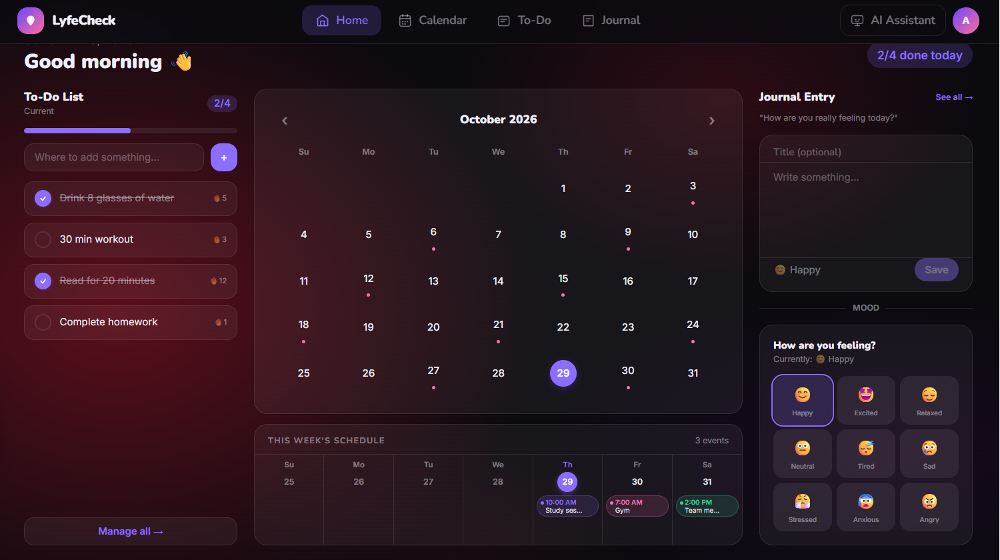
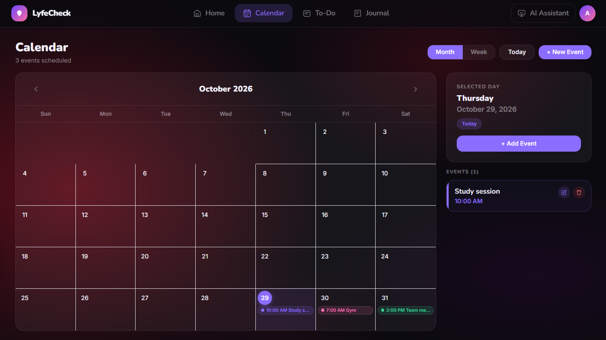
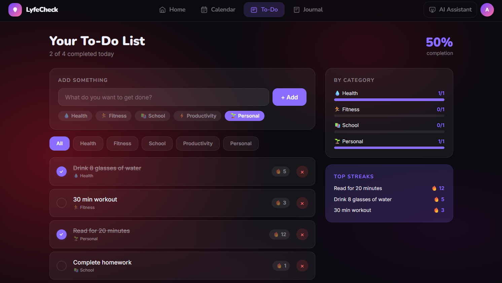
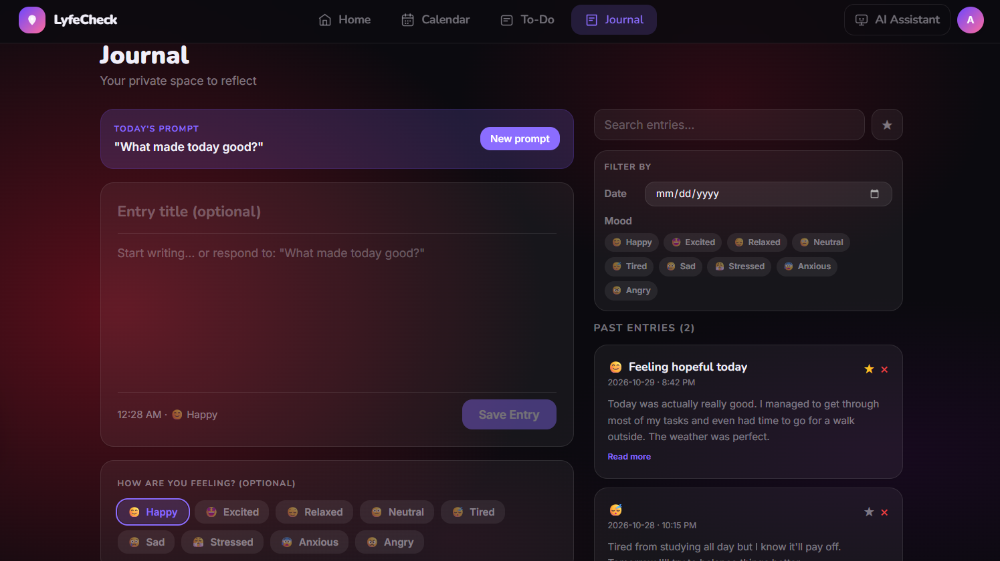
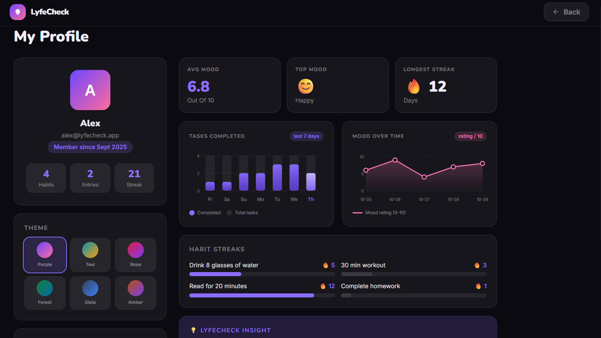
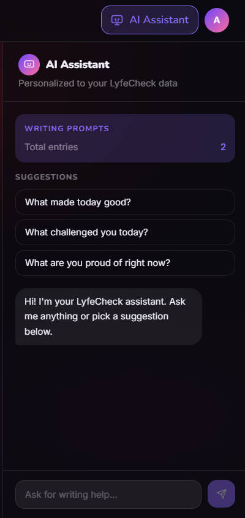

Home Dashboard

An overview of daily tasks, calendar, journal, and mood tracking.
LYFE CHECK is my Computer Science thesis project, where I'm working to bring personal wellness and productivity together in one application. I wanted to create something that could help people stay organized while also making time for their well-being. With features like task management, mood tracking, habit tracking, and journaling, my goal is to make it easier for users to manage their daily responsibilities, build healthy routines, and reflect on their personal growth.
Staying productive while maintaining personal well-being can be challenging, especially for students and individuals balancing school, work, personal responsibilities, and everyday life. LYFE CHECK is made for people who want to stay organized, build healthier habits, and make time for self-reflection. By combining productivity and wellness tools into one accessible platform, LYFE CHECK aims to make managing daily life simpler and more convenient.
Explore the different features of LYFE CHECK and how they support wellness and productivity.
Showing 0 of 8
LYFE CHECK has gone through several stages of development, beginning as a desktop application for my Object-Oriented Programming (OOP) class project and gradually evolving into a web application for my Computer Science thesis. As I continued working on the project, I wanted to turn it into something I would personally enjoy using in my everyday life. This motivated me to improve the design, expand its features, and create a platform that is both practical and user-friendly, not just for myself but for other people like me who may benefit from it as well.
LYFE CHECK originally began as a desktop application developed using Java and JavaFX for my Object-Oriented Programming (OOP) class. The main focus of this version was to apply object-oriented programming principles and design patterns while building a functional application. This project gave me the foundation for LYFE CHECK and inspired me to continue developing it for my thesis project.
I began the design process by creating a paper prototype of LYFE CHECK to sketch out the layout, organize features, and plan how users would navigate the application. Once I had a clear idea of the design, I used Figma to turn my paper prototype into an interactive digital prototype. This allowed me to further develop the user interface and visualize how the different features would work together. The digital prototype includes a home dashboard, calendar, to-do list, journal, profile page, and a concept for a future AI assistant.
LYFE CHECK is now being developed as a web application using React, TypeScript, and a cloud-based backend for my Computer Science thesis. I wanted to move away from the original desktop version and create something that people could easily access from different devices. React and TypeScript allow me to build a more interactive application while keeping my code organized as I add new features. The cloud backend will also allow users to securely store their information, log into their accounts, and access their data across devices. My goal is to bring all of these technologies together to turn LYFE CHECK into a fully functional application that people can use in their everyday lives.
One of the features I plan to introduce to LYFE CHECK is an AI assistant designed specifically for wellness and journaling. My goal is to create an assistant that can provide personalized suggestions, encourage self-reflection, and generate journaling prompts based on users' needs. I also want to ensure that the AI stays focused on the purpose of LYFE CHECK by limiting its responses to topics related to wellness, productivity, and personal growth.
These screenshots are from my LYFE CHECK Figma prototype. They show the different pages and features I designed for the application.

An overview of daily tasks, calendar, journal, and mood tracking.

Organize schedules and keep track of upcoming events.

Organize tasks and track daily productivity.

Reflect on experiences and record journal entries.

View personal statistics and progress over time.

A planned feature for journaling suggestions and wellness-related guidance.
Everyone faces different challenges when balancing productivity and personal wellness. Select the option that best describes something that you usually struggle with to see how LYFE CHECK could help.